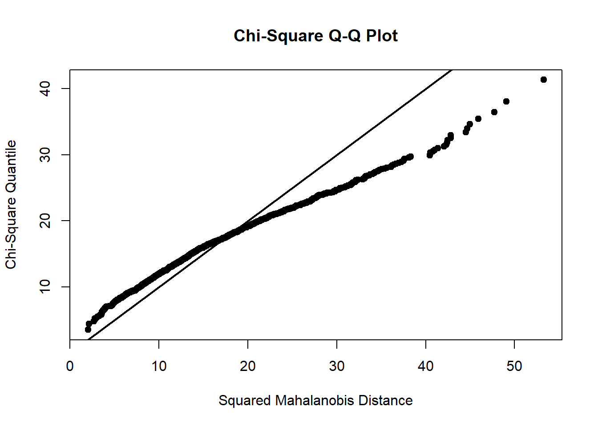
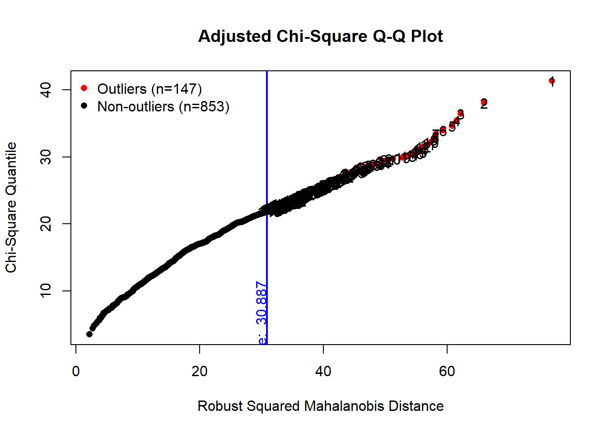
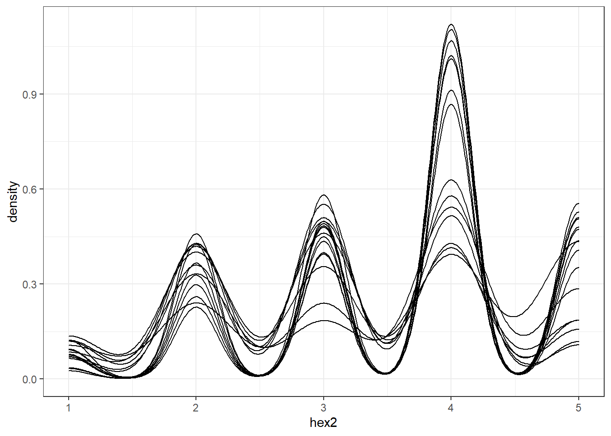
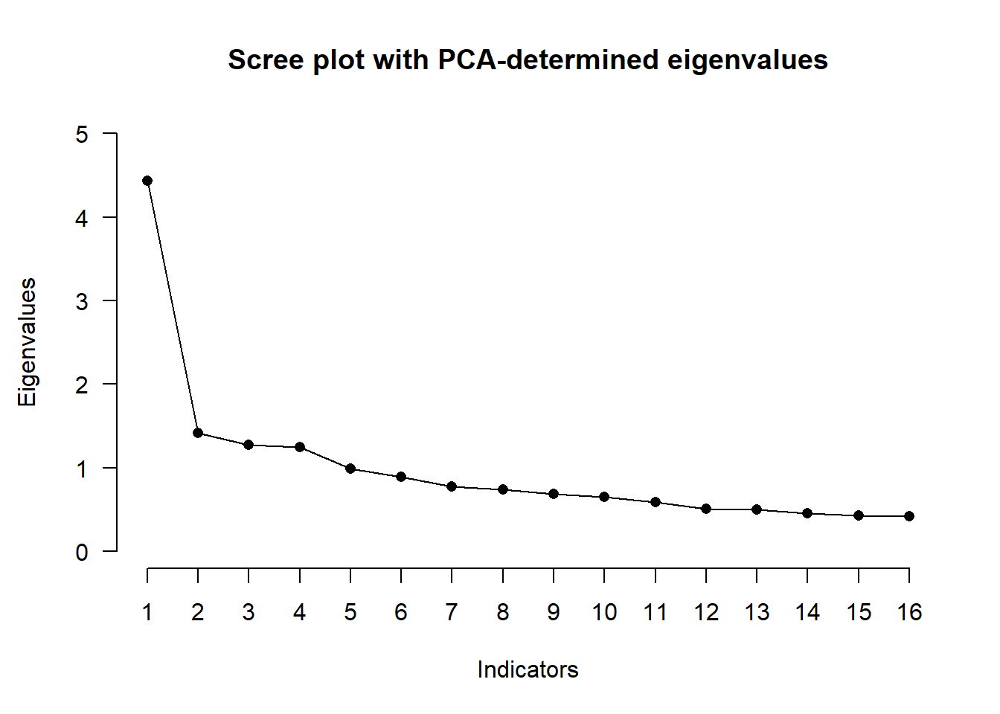
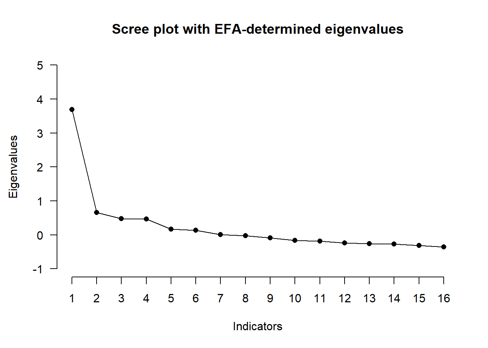
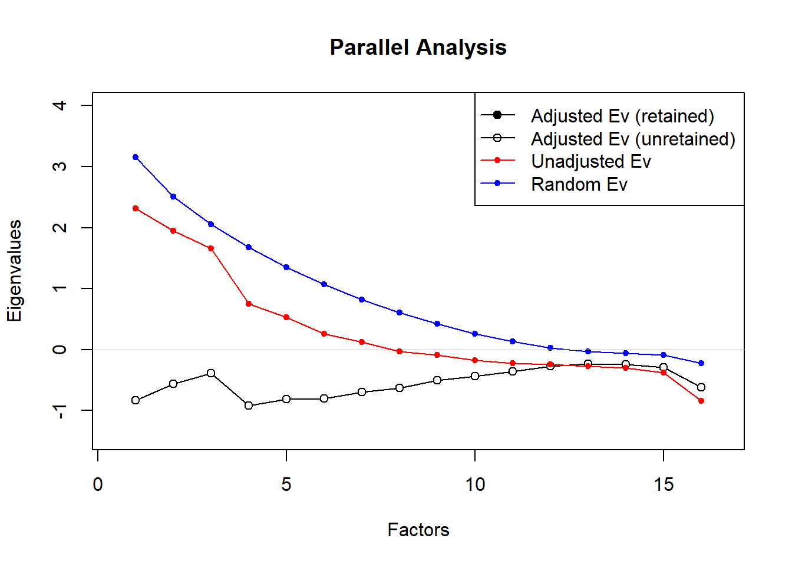
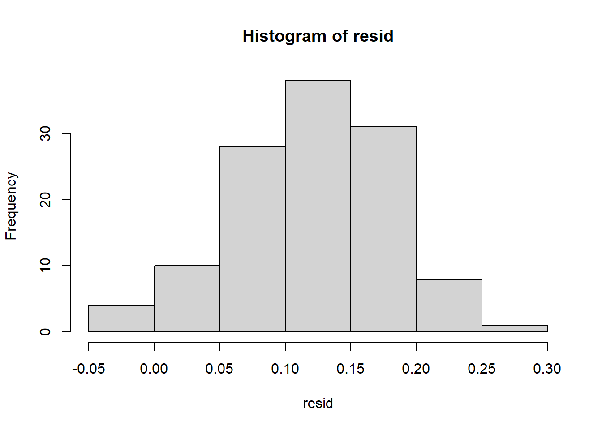

11 Exploratory factor analysis (EFA)
In this section we will take a look at a very large sample from a cross-language hexaco-100 study. The aim is to see if the scale works on all languages. And to fit a theoretically good model. For the full study see: https://www.researchgate.net/publication/332130706_The_HEXACO-100_across_16_languages_A_large-scale_test_of_measurement_invariance we won’t be able to use the full scale (not enough power in the computer), but we can try some cool stuff.
We will be using this data for both the EFA and the CFA later on.
library(tidyverse)
library(readxl)
library(here)
hexaco_100 <- read_excel(here("Data sets/hexaco.100.xlsx"))
View(hexaco_100)This data set can be found at: https://osf.io/bwtnr/ or at the book repo. Below we have a brief description of the variables. Variable Description lang <- Language version of HEXACO-100 2 = “Chinese”, 3 = “Croatian”, 4 =“Czech”, 5 = “Dutch”, 6 = “German”, 8 = “Italian” 9 = “Japanese”, 10 = “Korean” 11 = “Polish”, 13 = “Serbian” 14 = “Spanish”, 15 = “Swedish”, 16 = “Turkish”)
hex1 - hex100 <- Items of the HEXACO-100; 1 = strongly disagree to 5 = strongly agree(inverted items are already re-coded); for assignment of items to HEXACO factors, see www.hexaco.org)
hh <- Mean value of Honesty-Humility hex:6, 30, 54, 78, 12, 36, 60, 84, 18, 42, 66, 90, 24, 48, 72, 96
em <- Mean value of Emotionality hex:5, 29, 53, 77, 11, 35, 59, 83, 17, 41, 65, 89, 23, 47, 71, 95
ex <- Mean value of Extraversion hex:4, 28, 52, 76, 10, 34, 58, 82, 16, 40, 64, 88, 22, 46, 70, 94
ag <- Mean value of Agreeableness hex:3, 27, 51, 75, 9, 33, 57, 81, 15, 39, 63, 87, 21, 45, 69, 93
co <- Mean value of Conscientiousness hex:2, 26, 50, 74, 8, 32, 56, 80, 14, 38, 62, 86, 20, 44, 68, 92
op <- Mean value of Openness to Experience hex:1, 25, 49, 73, 7, 31, 55, 79, 13, 37, 61, 85, 19, 43, 67, 91
hh_sinc <- Mean value of sincerity facet of Honesty-Humility 6, 30, 54, 78
hh_fair <- Mean value of fairness facet of Honesty-Humility 12, 36, 60, 84
hh_gree <- Mean value of greed-avoidance facet of Honesty-Humility 18, 42, 66, 90
hh_mode <- Mean value of modesty facet of Honesty-Humility 24, 48, 72, 96
em_fear <- Mean value of fearfulness facet of Emotionality 5, 29, 53, 77
em_anxi <- Mean value of anxiety facet of Emotionality 11, 35, 59, 83
em_depe <- Mean value of dependence facet of Emotionality 17, 41, 65, 89
em_sent <- Mean value of sentimentality facet of Emotionality 23, 47, 71, 95
ex_sses <- Mean value of social self-esteem facet of Extraversion 4, 28, 52, 76
ex_socb <- Mean value of social boldness facet of Extraversion 10, 34, 58, 82
ex_soci <- Mean value of sociability facet of Extraversion 16, 40, 64, 88
ex_live <- Mean value of liveliness facet of Extraversion 22, 46, 70, 94
ag_forg <- Mean value of forgiveness facet of Agreeableness 3, 27, 51, 7
ag_gent <- Mean value of gentleness facet of Agreeableness 9, 33, 57, 81
ag_flex <- Mean value of flexibility facet of Agreeableness 15, 39, 63, 87
ag_pati <- Mean value of patience facet of Agreeableness 21, 45, 69, 93
co_orga <- Mean value of organization facet of Conscientiousness 2, 26, 50, 74
co_dili <- Mean value of diligence facet of Conscientiousness 8, 32, 56, 80
co_perf <- Mean value of perfectionism facet of Conscientiousness 14, 38, 62, 86
co_prud <- Mean value of prudence facet of Conscientiousness 20, 44, 68, 92
op_aesa <- Mean value of aesthetic appreciation facet of Openness to Experience 1, 25, 49, 73
op_inqu <- Mean value of inquisitiveness facet of Openness to Experience 7, 31, 55, 79
op_crea <- Mean value of creativity facet of Openness to Experience 13, 37, 61, 85
op_unco <- Mean value of unconventionality facet of Openness to Experience 19, 43, 67, 91
altruism <- Mean value of altruism facet 97, 98, 99, 100
So, we have a lot of variables. Since we are using the data set more than once, we should split the sample so that we can use one half on the EFA and one for the CFA. Let´s do that now.
#Our random grouping variable
set.seed(324)
grouping <- rbinom(n = 25914,size = 1, prob = .5)
efa_data <- hexaco_100 %>%
filter(grouping == 1)
cfa_data <- hexaco_100 %>%
filter(grouping == 0)This dataset is still too big for us to use in an efficient manner. I will look at one factor in the data, conscientiousness, and examine how well we can capture the facets. Let´s make a data set with conscientiousness from our efa split. This data set will still be very very large, so let´s take a random sample of 1000 from the c data.
c_efa_data <- efa_data %>% dplyr::select(hex2, hex26, hex50, hex74, hex8, hex32, hex56, hex80, hex14, hex38, hex62, hex86, hex20, hex44, hex68, hex92)
c_efa_data <- slice_sample(c_efa_data, n = 1000, replace = F)Now that we have our data, we should look at the descriptive statistics of the variables. My favourite way, as you might know by now, is to use the mvn function.
library(MVN)
normality_diagnostics <- mvn(c_efa_data
, mvnTest = 'mardia'
, multivariatePlot = 'qq'
, univariateTest = 'AD'
, showOutliers = TRUE
, showNewData = TRUE
, multivariateOutlierMethod = 'adj')
Let’s check out the descriptive statistics from our diagnostics. One of the reasons I like the mvn function is that it stores a lot of useful information that we can access at any point later on.
normality_diagnostics$Descriptives## n Mean Std.Dev Median Min Max 25th 75th Skew Kurtosis
## hex2 1000 3.050 1.1120867 3 1 5 2 4 -0.002508437 -0.82143670
## hex26 1000 3.475 1.1647883 4 1 5 3 4 -0.416110282 -0.82440748
## hex50 1000 3.597 1.3054866 4 1 5 2 5 -0.545236972 -0.94672707
## hex74 1000 3.412 1.1906610 4 1 5 2 4 -0.354524887 -0.96547339
## hex8 1000 3.798 0.9529450 4 1 5 3 4 -0.642493661 -0.04725980
## hex32 1000 3.769 0.9426174 4 1 5 3 4 -0.644194691 0.02404429
## hex56 1000 3.654 1.0730496 4 1 5 3 4 -0.669001869 -0.22626167
## hex80 1000 3.708 1.0477757 4 1 5 3 4 -0.721876064 -0.12937096
## hex14 1000 3.426 1.0666122 4 1 5 3 4 -0.365724750 -0.63591986
## hex38 1000 3.639 1.0381506 4 1 5 3 4 -0.691687225 -0.18085416
## hex62 1000 3.742 0.9371842 4 1 5 3 4 -0.590045002 -0.14830252
## hex86 1000 3.075 1.1843892 3 1 5 2 4 -0.025719486 -0.99140133
## hex20 1000 3.267 1.0434557 3 1 5 2 4 -0.184216204 -0.70204656
## hex44 1000 3.561 1.0398848 4 1 5 3 4 -0.517272669 -0.44702630
## hex68 1000 3.172 0.9845737 3 1 5 2 4 -0.160086005 -0.70742902
## hex92 1000 3.038 1.0495988 3 1 5 2 4 -0.112011084 -0.74881524Seems very reasonable, no big skew or kurtosis. The mean and median are good as well
We can also take a look at the univariate normality.
normality_diagnostics$univariateNormality## Test Variable Statistic p value Normality
## 1 Anderson-Darling hex2 35.3622 <0.001 NO
## 2 Anderson-Darling hex26 44.5690 <0.001 NO
## 3 Anderson-Darling hex50 52.3565 <0.001 NO
## 4 Anderson-Darling hex74 46.7257 <0.001 NO
## 5 Anderson-Darling hex8 56.3651 <0.001 NO
## 6 Anderson-Darling hex32 57.8443 <0.001 NO
## 7 Anderson-Darling hex56 52.0495 <0.001 NO
## 8 Anderson-Darling hex80 57.8224 <0.001 NO
## 9 Anderson-Darling hex14 43.9103 <0.001 NO
## 10 Anderson-Darling hex38 61.1790 <0.001 NO
## 11 Anderson-Darling hex62 59.4221 <0.001 NO
## 12 Anderson-Darling hex86 35.1592 <0.001 NO
## 13 Anderson-Darling hex20 40.9404 <0.001 NO
## 14 Anderson-Darling hex44 51.4561 <0.001 NO
## 15 Anderson-Darling hex68 47.7856 <0.001 NO
## 16 Anderson-Darling hex92 40.6415 <0.001 NOUnsurprisingly, not normal. But remember that all these tests are sensitive. Let´s check the multivariate normality as well
normality_diagnostics$multivariateNormality## Test Statistic p value Result
## 1 Mardia Skewness 2022.73637299326 8.68036552148957e-104 NO
## 2 Mardia Kurtosis 25.8973135283211 0 NO
## 3 MVN <NA> <NA> NORight, does not look super good. But we should not rely too much on these tests. What we should do however, is use robust measures.
ggplot(c_efa_data)+
geom_density(aes(hex2))+
geom_density(aes(hex26))+
geom_density(aes(hex50))+
geom_density(aes(hex74))+
geom_density(aes(hex8))+
geom_density(aes(hex32))+
geom_density(aes(hex56))+
geom_density(aes(hex80))+
geom_density(aes(hex14))+
geom_density(aes(hex38))+
geom_density(aes(hex62))+
geom_density(aes(hex86))+
geom_density(aes(hex20))+
geom_density(aes(hex44))+
geom_density(aes(hex68))+
geom_density(aes(hex92))+
theme_bw()
#Doesnt look that bad to meFor comfort, let´s use the clean data identified by the multivariate test. I don´t like doing this, but we can use the raw data for reference later.
clean_efa_data <- normality_diagnostics$newDataLet´s use the clean data and get into the EFA. These are the packages that we will need.
library(GPArotation)
library(corpcor)
library(paran)
library(EFAtools)First thing to do is to check if our sample is adequate. We use the EFAtools package functions bartlett and KMO for that. We should also have a look at the correlation matrix.
#This is our correlation matrix
efa_cormat <- cor(clean_efa_data)
efa_cormat## hex2 hex26 hex50 hex74 hex8 hex32 hex56 hex80
## hex2 1.00000000 0.2871955 0.4531649 0.28415481 0.1470856 0.2912171 0.13801972 0.16787332
## hex26 0.28719547 1.0000000 0.2872702 0.43157386 0.1664188 0.2486826 0.26028062 0.20725469
## hex50 0.45316487 0.2872702 1.0000000 0.42370697 0.1017198 0.1655037 0.18446994 0.16585962
## hex74 0.28415481 0.4315739 0.4237070 1.00000000 0.1962804 0.3091320 0.42641427 0.32747466
## hex8 0.14708563 0.1664188 0.1017198 0.19628036 1.0000000 0.4278839 0.31818441 0.29322674
## hex32 0.29121707 0.2486826 0.1655037 0.30913198 0.4278839 1.0000000 0.49059451 0.28520909
## hex56 0.13801972 0.2602806 0.1844699 0.42641427 0.3181844 0.4905945 1.00000000 0.31097363
## hex80 0.16787332 0.2072547 0.1658596 0.32747466 0.2932267 0.2852091 0.31097363 1.00000000
## hex14 0.17395376 0.1734283 0.0837333 0.06477086 0.1622340 0.1969429 0.04024899 0.10252886
## hex38 0.15160392 0.1432670 0.1555252 0.23248669 0.1359317 0.2570612 0.23892328 0.18628779
## hex62 0.25889834 0.2107949 0.2030223 0.24033722 0.2348717 0.3391787 0.27122452 0.24648584
## hex86 0.23399211 0.2779688 0.1679841 0.22859601 0.3567389 0.3204844 0.21048840 0.29282324
## hex20 0.12743711 0.1945245 0.1615198 0.21468002 0.1315954 0.1715654 0.17577214 0.19895397
## hex44 0.04661578 0.2162990 0.2146281 0.38723733 0.1149172 0.1592388 0.32448200 0.27515917
## hex68 0.12328960 0.1832443 0.1449304 0.14923597 0.1211598 0.1802041 0.18176380 0.07287841
## hex92 0.14063931 0.3193040 0.2334803 0.34281796 0.1268410 0.1701101 0.24885037 0.25170416
## hex14 hex38 hex62 hex86 hex20 hex44 hex68
## hex2 0.17395376 0.15160392 0.2588983 0.23399211 0.1274371 0.04661578 0.12328960
## hex26 0.17342827 0.14326701 0.2107949 0.27796879 0.1945245 0.21629902 0.18324430
## hex50 0.08373330 0.15552518 0.2030223 0.16798413 0.1615198 0.21462814 0.14493043
## hex74 0.06477086 0.23248669 0.2403372 0.22859601 0.2146800 0.38723733 0.14923597
## hex8 0.16223404 0.13593166 0.2348717 0.35673895 0.1315954 0.11491720 0.12115982
## hex32 0.19694294 0.25706118 0.3391787 0.32048440 0.1715654 0.15923877 0.18020409
## hex56 0.04024899 0.23892328 0.2712245 0.21048840 0.1757721 0.32448200 0.18176380
## hex80 0.10252886 0.18628779 0.2464858 0.29282324 0.1989540 0.27515917 0.07287841
## hex14 1.00000000 0.17644992 0.3725353 0.23634346 0.1993020 0.03981975 0.15628762
## hex38 0.17644992 1.00000000 0.3972801 0.32174800 0.2459375 0.26711513 0.08387355
## hex62 0.37253530 0.39728014 1.0000000 0.34899974 0.2077077 0.25708080 0.23778354
## hex86 0.23634346 0.32174800 0.3489997 1.00000000 0.2026275 0.17831975 0.08758804
## hex20 0.19930196 0.24593747 0.2077077 0.20262749 1.0000000 0.36908913 0.27023288
## hex44 0.03981975 0.26711513 0.2570808 0.17831975 0.3690891 1.00000000 0.20568709
## hex68 0.15628762 0.08387355 0.2377835 0.08758804 0.2702329 0.20568709 1.00000000
## hex92 0.08303258 0.22223690 0.1647727 0.18348147 0.3569038 0.28036236 0.18646604
## hex92
## hex2 0.14063931
## hex26 0.31930404
## hex50 0.23348034
## hex74 0.34281796
## hex8 0.12684100
## hex32 0.17011011
## hex56 0.24885037
## hex80 0.25170416
## hex14 0.08303258
## hex38 0.22223690
## hex62 0.16477272
## hex86 0.18348147
## hex20 0.35690376
## hex44 0.28036236
## hex68 0.18646604
## hex92 1.00000000Most correlations are very small, we should not expect too much from this. Let´s check the KMO and bartlett´s test to see where we are at.
BARTLETT(clean_efa_data)## i 'x' was not a correlation matrix. Correlations are found from entered raw data.##
## v The Bartlett's test of sphericity was significant at an alpha level of .05.
## These data are probably suitable for factor analysis.
##
## <U+0001D712>²(120) = 3039.2, p < .001KMO(clean_efa_data)## i 'x' was not a correlation matrix. Correlations are found from entered raw data.##
## -- Kaiser-Meyer-Olkin criterion (KMO) ----------------------------------------------------
##
## v The overall KMO value for your data is meritorious.
## These data are probably suitable for factor analysis.
##
## Overall: 0.84
##
## For each variable:
## hex2 hex26 hex50 hex74 hex8 hex32 hex56 hex80 hex14 hex38 hex62 hex86 hex20 hex44 hex68
## 0.775 0.875 0.793 0.857 0.837 0.836 0.839 0.908 0.766 0.851 0.845 0.871 0.817 0.826 0.833
## hex92
## 0.874Nice, we should be good to go with our factor extraction, but first lets also look at the determinant.
det(efa_cormat)## [1] 0.02751169Good, it´s not negative and its quite big. Certainly bigger than the “cut-off” at <.00001. We are good to go, let´s check the scree plot to see where the eigen values drop off and then perform a parallel analysis to get an estimate of how many factors we should extract.
SCREE(efa_cormat)##
## Eigenvalues were found using PCA, SMC, and EFA. Most of the variance is captured by extracting one factor it seems. Let´s performe the parallel analysis to confirm this.
paran(efa_cormat, iterations = 5000, centile = 0, quietly = FALSE,
status = TRUE, all = TRUE, cfa = TRUE, graph = TRUE, color = TRUE,
col = c("black", "red", "blue"), lty = c(1, 2, 3), lwd = 1, legend = TRUE,
file = "", width = 640, height = 640, grdevice = "png", seed = 0)##
## Using eigendecomposition of correlation matrix.
## Computing: 10% 20% 30% 40% 50% 60% 70% 80% 90% 100%
##
##
## Results of Horn's Parallel Analysis for factor retention
## 5000 iterations, using the mean estimate
##
## --------------------------------------------------
## Factor Adjusted Unadjusted Estimated
## Eigenvalue Eigenvalue Bias
## --------------------------------------------------
## 1 -0.838338 2.315898 3.154237
## 2 -0.564988 1.945278 2.510266
## 3 -0.387499 1.661586 2.049086
## 4 -0.925372 0.746462 1.671835
## 5 -0.815656 0.529957 1.345614
## 6 -0.806786 0.259593 1.066380
## 7 -0.696998 0.122074 0.819073
## 8 -0.634500 -0.02910 0.605393
## 9 -0.504794 -0.08692 0.417865
## 10 -0.434328 -0.17524 0.259079
## 11 -0.358293 -0.22913 0.129157
## 12 -0.274465 -0.24473 0.029731
## 13 -0.238661 -0.27265 -0.03399
## 14 -0.241428 -0.30715 -0.06572
## 15 -0.289076 -0.38367 -0.09460
## 16 -0.619855 -0.84320 -0.22334
## --------------------------------------------------
##
## Adjusted eigenvalues > 0 indicate dimensions to retain.
## (0 factors retained) Looks like it is as we feared. We don´t really have a factor structure to latch on to. But let’s conduct our EFA and see what the pattern matrices look like. We start by fitting our efa model. Theoretically, we should extract 4 factors, so let’s do that and call the model efa.4.
efa.4<- EFA( x = efa_cormat #the correlation matrix
, N = 839 #number of obs
, n_factors = 4 #number of factors
, method = 'ML' #method of estimation
, rotation = 'oblimin')#method of rotationBefore looking at the model output, let’s check the communalities of our items resulting from this model. That is, how much variance is accounted for in each item from the 4 factor model fitted.
#There are different measures of communalities, the efa function takes 2, one called h2_init and one called h2. h2 is the final communality estimate from the unrotated solution and h2_init is the initial communality estimate from a PAF. I will use h2, since I did not use PAF, but it might be useful to look into how different measures of communalities will affect the variance estimates of your model.
efa.4$h2## hex2 hex26 hex50 hex74 hex8 hex32 hex56 hex80 hex14
## 0.5083995 0.2907840 0.4810619 0.5527056 0.3215491 0.5681460 0.5331742 0.2442253 0.3065944
## hex38 hex62 hex86 hex20 hex44 hex68 hex92
## 0.2671640 0.4369054 0.3128426 0.3220605 0.4526378 0.1262208 0.2833638In general we can account for a reasonable amount of variance in our items, with the exception of hex68. Let´s keep this in mind for when we look at the main model output. To get a look at this output simply call the fitted model like so:
efa.4##
## EFA performed with type = 'EFAtools', method = 'ML', and rotation = 'oblimin'.
##
## -- Rotated Loadings ----------------------------------------------------------------------
##
## F1 F2 F3 F4
## hex2 .041 -.206 .698 .172
## hex26 .122 .198 .358 -.008
## hex50 -.091 .100 .693 -.055
## hex74 .237 .344 .410 -.251
## hex8 .560 -.076 -.030 .120
## hex32 .739 -.125 .068 .092
## hex56 .669 .189 -.010 -.218
## hex80 .322 .218 .060 .006
## hex14 .009 .043 .052 .526
## hex38 .132 .300 -.000 .272
## hex62 .194 .191 .073 .453
## hex86 .272 .091 .091 .317
## hex20 -.062 .530 -.004 .195
## hex44 .049 .672 -.032 -.074
## hex68 .042 .249 .051 .141
## hex92 .024 .451 .146 -.027
##
## -- Factor Intercorrelations --------------------------------------------------------------
##
## F1 F2 F3 F4
## F1 1.000 -0.436 0.403 0.298
## F2 -0.436 1.000 -0.386 -0.181
## F3 0.403 -0.386 1.000 0.215
## F4 0.298 -0.181 0.215 1.000
##
## -- Variances Accounted for ---------------------------------------------------------------
##
## F1 F2 F3 F4
## SS loadings 3.822 0.803 0.735 0.648
## Prop Tot Var 0.239 0.050 0.046 0.040
## Cum Prop Tot Var 0.239 0.289 0.335 0.375
## Prop Comm Var 0.636 0.134 0.122 0.108
## Cum Prop Comm Var 0.636 0.770 0.892 1.000
##
## -- Model Fit -----------------------------------------------------------------------------
##
## <U+0001D712>²(62) = 243.58, p < .001
## CFI = .97
## RMSEA [90% CI] = .06 [.05; .07]
## AIC = 119.58
## BIC = -173.81
## CAF = .48This looks pretty good in my opinion. We have a factor structure that resembles what could be theoretically expected as well as what the unadjusted eigen values of the parallel analysis suggested IF we use kaiser extraction, that is, extracting factors that have an eigen value of 1 or more(note, factor 4 does not have an eigen value of 1 but slightly lower though the point of inflection seem to be at 4 factors - see the graphs above).
The factor correlation table indicates the correlation between the factors, some are quite correlated such as factor 2 and 1 with r = -.44. Looking at the explained variance table we can see that we explain roughly 37% of the variation of out items using this model. And the model fit measures are very nice with a low RMSEA and a high CFI. Note that the fit measures are only available when using maximum likelihood estimation. If you are using a non ML estimation another way of assessing the fit or if we extracted the “right” number of factors is to look at the difference between the model correlations (reproduced correlations) and the correlations in the raw data. That is, check the sum of the residuals.
Residuals can be extracted using the “factor.residuals” function from the psych package. You just enter the original correlation matrix and the rotated loadings from your model (I believe)
resid <- psych::factor.residuals(r = efa.4$orig_R, #our original R matrix
f = efa.4$rot_loadings) #our rotated loadingsNow that we have our residuals, we can do more or less whatever we wish to do with them. Note that the object resid is a 16x16 matrix. They can be tricky to work with, so we can instead put the upper triangle of the matrix in a column - essentially a list of the residuals. I will only check the distribution of them with a simple histogram, but residuals are good to have for many things. We can do this like so:
resid <- as.matrix(resid[upper.tri(resid)])
hist(resid)
#Looks very nice if you ask me, some residuals are quite big though considering we are working with correlatoins. The issues with this model are the crossloadings and the small loading on hex68 - which we expected due to the low communality. So where do we go from here? In a full analysis we should try out different models and compare them to each other. And then follow upp these models by testing their reliability. Reliability can be measured in many ways. I prefer using a split sample to see if the results are replicated. This should be done for all models of interest in order to examine whether or not they are reliable. For an introduction to this I recommend reading “Osborne, J. W., & Fitzpatrick, D. C. (2012). Replication analysis in exploratory factor analysis: What it is and: Why it makes your analysis better. Practical Assessment, Research and Evaluation, 17(15), 1–8.” The most barebones way of examining this is with some sort of intercorrelation measure such as cronbachs alpha. I will show a way of doing this eventhough I personally do not think these measures are very convincing in terms of reliabuility.
We start by creating dataframes with the items corresponding to each factor.
factor1 <- data.frame(clean_efa_data$hex8,
clean_efa_data$hex32,
clean_efa_data$hex56,
clean_efa_data$hex80)
factor2 <- data.frame(clean_efa_data$hex20,
clean_efa_data$hex44,
clean_efa_data$hex92)
factor3 <- data.frame(clean_efa_data$hex2,
clean_efa_data$hex26,
clean_efa_data$hex50,
clean_efa_data$hex74)
factor4 <- data.frame(clean_efa_data$hex14,
clean_efa_data$hex38,
clean_efa_data$hex62,
clean_efa_data$hex86)These dataframes can be usefull for many things, but lets check the cronbachs alpha of the factors.
psych::alpha(factor1)##
## Reliability analysis
## Call: psych::alpha(x = factor1)
##
## raw_alpha std.alpha G6(smc) average_r S/N ase mean sd median_r
## 0.68 0.69 0.63 0.35 2.2 0.018 3.7 0.71 0.31
##
## lower alpha upper 95% confidence boundaries
## 0.65 0.68 0.72
##
## Reliability if an item is dropped:
## raw_alpha std.alpha G6(smc) average_r S/N alpha se var.r med.r
## clean_efa_data.hex8 0.63 0.63 0.55 0.36 1.7 0.022 0.01252 0.31
## clean_efa_data.hex32 0.57 0.57 0.47 0.31 1.3 0.025 0.00016 0.31
## clean_efa_data.hex56 0.60 0.60 0.51 0.34 1.5 0.024 0.00643 0.29
## clean_efa_data.hex80 0.68 0.68 0.59 0.41 2.1 0.019 0.00762 0.43
##
## Item statistics
## n raw.r std.r r.cor r.drop mean sd
## clean_efa_data.hex8 853 0.69 0.71 0.55 0.45 3.8 0.93
## clean_efa_data.hex32 853 0.76 0.77 0.67 0.55 3.8 0.94
## clean_efa_data.hex56 853 0.75 0.74 0.61 0.50 3.7 1.07
## clean_efa_data.hex80 853 0.67 0.66 0.45 0.38 3.7 1.04
##
## Non missing response frequency for each item
## 1 2 3 4 5 miss
## clean_efa_data.hex8 0.01 0.09 0.20 0.46 0.23 0
## clean_efa_data.hex32 0.02 0.09 0.21 0.47 0.21 0
## clean_efa_data.hex56 0.04 0.13 0.18 0.43 0.22 0
## clean_efa_data.hex80 0.03 0.12 0.17 0.46 0.22 0psych::alpha(factor2)##
## Reliability analysis
## Call: psych::alpha(x = factor2)
##
## raw_alpha std.alpha G6(smc) average_r S/N ase mean sd median_r
## 0.6 0.6 0.51 0.34 1.5 0.024 3.3 0.77 0.36
##
## lower alpha upper 95% confidence boundaries
## 0.56 0.6 0.65
##
## Reliability if an item is dropped:
## raw_alpha std.alpha G6(smc) average_r S/N alpha se var.r med.r
## clean_efa_data.hex20 0.44 0.44 0.28 0.28 0.78 0.038 NA 0.28
## clean_efa_data.hex44 0.53 0.53 0.36 0.36 1.11 0.032 NA 0.36
## clean_efa_data.hex92 0.54 0.54 0.37 0.37 1.17 0.032 NA 0.37
##
## Item statistics
## n raw.r std.r r.cor r.drop mean sd
## clean_efa_data.hex20 853 0.77 0.77 0.59 0.45 3.3 1
## clean_efa_data.hex44 853 0.74 0.74 0.51 0.39 3.6 1
## clean_efa_data.hex92 853 0.73 0.73 0.50 0.39 3.0 1
##
## Non missing response frequency for each item
## 1 2 3 4 5 miss
## clean_efa_data.hex20 0.04 0.22 0.30 0.33 0.11 0
## clean_efa_data.hex44 0.03 0.15 0.21 0.43 0.17 0
## clean_efa_data.hex92 0.07 0.25 0.31 0.31 0.06 0psych::alpha(factor3)##
## Reliability analysis
## Call: psych::alpha(x = factor3)
##
## raw_alpha std.alpha G6(smc) average_r S/N ase mean sd median_r
## 0.69 0.69 0.65 0.36 2.3 0.017 3.4 0.86 0.36
##
## lower alpha upper 95% confidence boundaries
## 0.66 0.69 0.73
##
## Reliability if an item is dropped:
## raw_alpha std.alpha G6(smc) average_r S/N alpha se var.r med.r
## clean_efa_data.hex2 0.65 0.65 0.56 0.38 1.8 0.021 0.0066 0.42
## clean_efa_data.hex26 0.66 0.65 0.57 0.39 1.9 0.020 0.0082 0.42
## clean_efa_data.hex50 0.60 0.60 0.51 0.33 1.5 0.024 0.0071 0.29
## clean_efa_data.hex74 0.61 0.61 0.52 0.34 1.6 0.023 0.0092 0.29
##
## Item statistics
## n raw.r std.r r.cor r.drop mean sd
## clean_efa_data.hex2 853 0.69 0.70 0.54 0.45 3.0 1.1
## clean_efa_data.hex26 853 0.69 0.69 0.53 0.43 3.5 1.2
## clean_efa_data.hex50 853 0.77 0.75 0.63 0.52 3.6 1.3
## clean_efa_data.hex74 853 0.74 0.74 0.61 0.51 3.4 1.2
##
## Non missing response frequency for each item
## 1 2 3 4 5 miss
## clean_efa_data.hex2 0.08 0.26 0.30 0.26 0.10 0
## clean_efa_data.hex26 0.05 0.19 0.18 0.37 0.21 0
## clean_efa_data.hex50 0.07 0.18 0.13 0.28 0.33 0
## clean_efa_data.hex74 0.05 0.22 0.16 0.36 0.20 0psych::alpha(factor4)##
## Reliability analysis
## Call: psych::alpha(x = factor4)
##
## raw_alpha std.alpha G6(smc) average_r S/N ase mean sd median_r
## 0.63 0.64 0.59 0.31 1.8 0.021 3.5 0.73 0.34
##
## lower alpha upper 95% confidence boundaries
## 0.59 0.63 0.67
##
## Reliability if an item is dropped:
## raw_alpha std.alpha G6(smc) average_r S/N alpha se var.r med.r
## clean_efa_data.hex14 0.62 0.62 0.53 0.36 1.66 0.023 0.0015 0.35
## clean_efa_data.hex38 0.57 0.58 0.49 0.32 1.41 0.025 0.0053 0.35
## clean_efa_data.hex62 0.49 0.49 0.40 0.24 0.97 0.030 0.0053 0.24
## clean_efa_data.hex86 0.57 0.58 0.50 0.32 1.38 0.026 0.0146 0.37
##
## Item statistics
## n raw.r std.r r.cor r.drop mean sd
## clean_efa_data.hex14 853 0.64 0.64 0.44 0.34 3.4 1.06
## clean_efa_data.hex38 853 0.68 0.68 0.51 0.40 3.7 1.03
## clean_efa_data.hex62 853 0.74 0.76 0.66 0.53 3.8 0.93
## clean_efa_data.hex86 853 0.72 0.69 0.51 0.41 3.1 1.17
##
## Non missing response frequency for each item
## 1 2 3 4 5 miss
## clean_efa_data.hex14 0.04 0.18 0.25 0.39 0.15 0
## clean_efa_data.hex38 0.03 0.14 0.17 0.48 0.19 0
## clean_efa_data.hex62 0.01 0.11 0.20 0.48 0.20 0
## clean_efa_data.hex86 0.08 0.27 0.24 0.28 0.13 0Nice, we have our alpha measures. They are a bit low, but hey, that´s the name of the facet game.
This is basically all there is to the EFA in terms of procedure. The point is to reduce the items to latent variables/factors - which is something that we have done. What to do next depends on your research question - do you want to use participants scores to predict something? maybe you just want to examine the reliability. An overly long look into these techniques are superfluous at this point since we will move on the CFA and SEM later on, which are better suited for those types of questions anyways. But note that you could and should play around with the data here and fit different model solutions and compare them. One reason I like this dataset is because of how massive it is, try to remove some items and see what happens :) EFA is fun in the sense that it is very open, you don´t have any clear answers to your questions and you are just asking questions from your data. I think it´s a good approach to pilot studies or studies that are not heavy on hypothesis testing.
#Confirmatory factor analysis